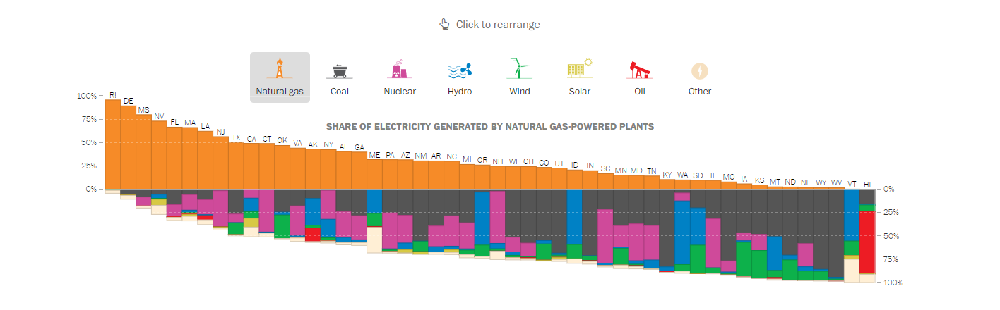

The visualization shown in the webpage above clearly illustrates the source of the power plants in the U.S. Each point in the plot displays the location of a power plant. Its size represents the output of the plant and the color stands for the source of the power.
One can easily find that each region/state in the country has a certain characteristics in its primary source of the power. For example, coal-based power is widely used in east side of the country, where there are a lot of mining sites of the resource beside the mountains. On the other hand, solar power plant is a popular plant type in the southwest region, in which people can except more shiny days in a year than any of other regions. The flat land and stable weather is a good condition for wind-based power so that there are many wind power plants in the plain area. Also, users may find which part of the country has higher output of electricity.
Additionally, the webpage offers an interactive bar plot, with which users can explore the component of the power in each state. Users may click the type of the source to rearrange the bar plot and hover the section of the plot to display the share of the source in the state. This helps them further understand the primary source of the energy they use everyday in various locations of the country.
In short, this set of the visualizations offers a good user experience. It has a clear motivation of the visualization (i.e., to display the distribution of various power plants), appropriate selection of size/color of each point and legend placement, and additional feature that enables users to further investigate the details of the topic. It might be further better visualization if it could let users select the resource type or output power to dynamically change the plot on the map.